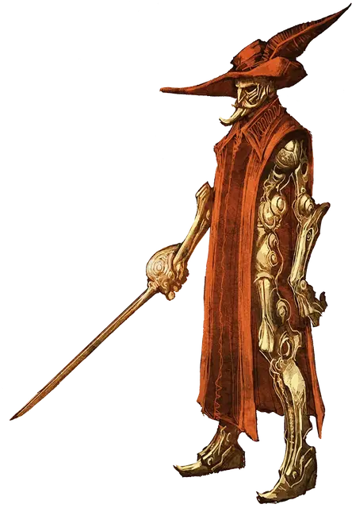

Нимблрайт
Nimblewright
Средний Конструкт, без мировоззрения

Класс Доспеха 18 (природный доспех)
Хиты 45 (6к8 + 18)
Скорость 60 футов
| мод | спас | ||
|---|---|---|---|
| СИЛ | 12 | +1 | +1 |
| ЛОВ | 18 | +4 | +6 |
| ТЕЛ | 17 | +3 | +3 |
| мод | спас | ||
|---|---|---|---|
| ИНТ | 8 | −1 | −1 |
| МДР | 10 | +0 | +0 |
| ХАР | 6 | −2 | −2 |
Навыки Акробатика +8, Восприятие +2
Сопротивление урону дробящий, колющий, рубящий от немагических атак
Иммунитет к состояниям окаменение, отравление, испуг, истощение
Чувства тёмное зрение 60 футов, пассивное Восприятие 12
Языки понимает языки своего создателя, но не говорит.
Опасность 4 (1100 опыта)
Бонус мастерства +2
Особенности
Сопротивление магии. Нимблрайт совершает с преимуществом спасброски от заклинаний и прочих магических эффектов.
Магическое оружие. Атаки оружием нимблрайта являются магическими.
Устойчивый. Нимблрайт совершает с преимуществом спасброски Силы и Ловкости против эффектов, сбивающих его с ног.
Ремонтируемый. Пока у нимблрайта остаётся хотя бы 1 хит, он восстанавливает 1 хит, если на него наложить заклинание починка.
Действия
Мультиатака. Нимблрайт совершает три атаки: одну кинжалом и две рапирой.
Кинжал. Рукопашная или дальнобойная атака оружием: +6 к попаданию, досягаемость 5 футов или дистанция 20/60 футов, одна цель. Попадание: Колющий урон 6 (1к4 + 4).
Рапира. Рукопашная атака оружием: +6 к попаданию, досягаемость 5 футов, одна цель. Попадание: Колющий урон 8 (1к8 + 4).
Реакции
Парирование. Нимблрайт добавляет 2 к КД против одной рукопашной атаки, которая должна попасть по нему. Для этого нимблрайт должен видеть атакующего, и должен использовать рукопашное оружие.
Описание
Эти магические конструкты создают как стражи или убийцы. Обычно их делают из лёгкого дерева и оживляют с помощью магии. Одетого нимблрайта нетрудно принять за человека. Некоторые нимблрайты одеваются просто, другие — в вычурные костюмы. Нимблрайты лишены эмоций, их лица навечно застыли в том выражении, какое им придал создатель.
Дуэлянт. Нимблрайт двигается, словно танцор, и дерётся как сорвиголова, уклоняясь и парируя удары и ловко поражая врагов.
Природа конструкта. Нимблрайту не нужны воздух, еда, питьё и сон. Получаемый им урон можно восстановить с помощью заклинания починка, но если хиты нимблрайта опустятся до 0, он будет уничтожен навсегда.